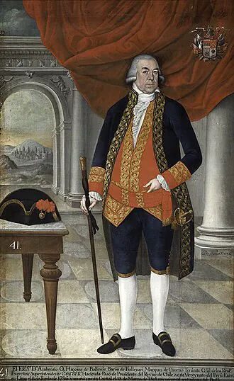

Refundación de Osorno

Fundada en 1558 por García Hurtado de Mendoza, Osorno fue abandonada a comienzos del siglo XVII, tras el alzamiento que siguió al Desastre de Curalaba. Durante casi dos siglos, el territorio entre Valdivia y Chiloé quedó bajo control huilliche, parte del Pueblo Mapuche. A fines del siglo XVIII, la política borbónica buscó asegurar los dominios del sur ante potencias rivales y conectar por tierra Valdivia con Chiloé. Tras el parlamento de Las Canoas (1793), en el que jefes huilliches aceptaron la presencia española, el gobernador Ambrosio O'Higgins impulsó la refundación, concretada el 13 de enero de 1796.
La nueva ciudad se pobló con familias traídas de distintos lugares, y en sus primeros años estuvo a cargo del irlandés Juan Mackenna, que más tarde participaría en la Independencia. La refundación formó parte del amplio programa de fundaciones de O'Higgins y le valió el título de marqués de Osorno. Para los huilliche significó el inicio de una pérdida progresiva de tierras, proceso que se aceleró en el siglo XIX con la colonización alemana y chilena.
Versión para niños
Osorno es una ciudad del sur que los españoles fundaron en 1558. Pocos años después de 1600 quedó abandonada, durante la guerra con los pueblos del sur. Casi doscientos años más tarde, el gobernador Ambrosio O'Higgins decidió volver a poblarla. El 13 de enero de 1796 la ciudad renació: llegaron familias, se trazaron calles y se construyeron casas. La nueva Osorno ayudó a unir por tierra Valdivia con Chiloé.
Para maestros
Nivel sugerido: 5° básico
Objetivo: Explicar la política de fundación de ciudades del siglo XVIII y sus efectos, tanto para la Corona como para el pueblo huilliche.
Preguntas para la clase:
- ¿Por qué la Corona quiso volver a poblar Osorno casi doscientos años después de su abandono?
- ¿Qué ganaban y qué perdían los distintos grupos con la refundación?
- ¿Qué otras ciudades de Chile se fundaron en el siglo XVIII?
Actividad (20–30 min): En un mapa de Chile, los estudiantes ubican Valdivia, Osorno y Chiloé y trazan el camino que se quería asegurar. Luego averiguan el año de fundación de su propia ciudad o de una cercana y lo ubican en una línea de tiempo junto a Osorno.
Fuentes sugeridas: Memoria Chilena; Biblioteca Nacional Digital; Museo Histórico Nacional.
Objetivos de Aprendizaje (Currículum Nacional)
- 5° básico · HI05 OA 07 Explicar y dar ejemplos de las distintas formas en las que españoles y mapuches se relacionaron … vida fronteriza y sistema de parlamentos
- 8° básico · HI08 OA 08 Analizar el rol de la ciudad en la administración del territorio del Imperio español
- 8° básico · HI08 OA 12 Analizar y evaluar las formas de convivencia y los tipos de conflicto … el consiguiente desarrollo de una sociedad de frontera durante la Colonia en Chile
Personajes
Revisión humana pendiente. Cómo se revisa · Reportar un error
Cómo citar: Historia de Chile. (2026). Refundación de Osorno. En Historia de Chile: atlas y línea de tiempo. https://moises-salgado.github.io/historia-de-chile/momento/refundacion-de-osorno.html